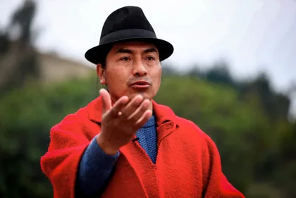
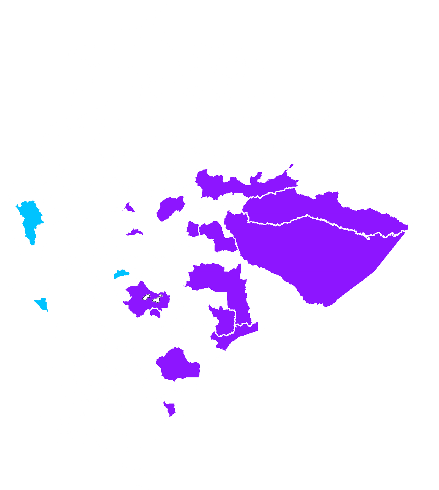
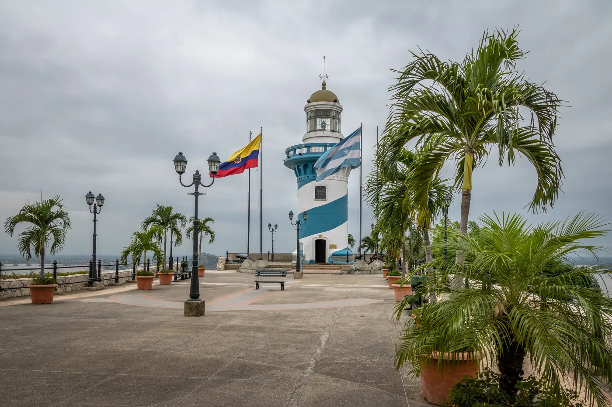
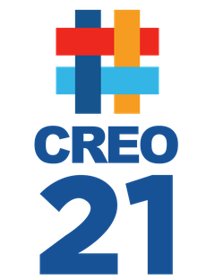

El 11 de noviembre, el Consejo Nacional Electoral (CNE) anunció que, tras casi dos meses de impugnaciones, el 100 % de las candidaturas de las 24 provincias del país están calificadas. Con ello arranca la cuenta regresiva hacia el día de las elecciones.
En esta segunda entrega analizamos cómo llegan las organizaciones políticas a estos comicios, qué está en juego con el CPCCS y qué anticipan los resultados locales para 2029, además de presentar a los principales candidatos.
En las dos últimas décadas, tres fuerzas nacionales han tenido una presencia significativa en los gobiernos locales: la Revolución Ciudadana, Pachakutik y el Partido Social Cristiano. A estos actores se suman nuevas fuerzas políticas, como ADN (legalmente inscrito en 2024), movimiento oficialista que se estrena en este tipo de elecciones
Llega a estos comicios con el reto de defender lo obtenido en 2023, sus mejores seccionales desde que su principal figura, el expresidente Rafael Correa, dejó el poder.
En esa ocasión ganó 9 prefecturas y 50 alcaldías, recuperó bastiones como la Prefectura del Azuay y se impuso en las principales ciudades y provincias del país: Quito, Guayaquil, Pichincha y Guayas.
Algunas de las figuras más reconocidas de este partido no estarán en la papeleta, ya sea porque no fueron calificadas sus candidaturas, como Luisa González en Manabí, o porque no se presentaron, como en los casos de las asambleístas Viviana Veloz y Paola Cabezas.
Competirá sin su marca Revolución Ciudadana tras la suspensión temporal impuesta por el Tribunal Contencioso Electoral (TCE).
El antecedente no es favorable: en 2019, cuando participó con la lista de Fuerza Compromiso Social, no ganó ninguna de las 50 alcaldías en las que presentó candidato y obtuvo únicamente dos prefecturas: Pichincha y Manabí.
Votación del correísmo en las 12 provincias donde compitió como Fuerza Compromiso Social en 2019 y como RC en 2023.
Fuente: Estimación propia con base en datos del CNE, seccionales 2019 y 2023. Votos de las alianzas contados completos para la lista correísta.
Esta brecha cobra relevancia en un proceso en el que deberá defender resultados ajustados. En 26 de sus 50 alcaldías, la ventaja sobre el segundo lugar fue menor a 10 puntos, y en 16, inferior a cinco. Entre ellas está Quito, donde Pabel Muñoz se impuso por apenas tres puntos respecto al segundo lugar.
De las ocho que ganó en 2023, solo en tres competirá con sus actuales alcaldes: Pabel Muñoz en Quito, Gustavo Barquet en Babahoyo y María del Carmen Aquino en Santa Elena.
En Guayaquil, Esmeraldas, Machala y Santo Domingo presentará nuevos candidatos, mientras que en Azogues no logró inscribir una candidatura.
Solo repite candidato en tres de las ocho; en Azogues no presentó candidatura.
En rojo, ventajas menores a 5 puntos. * Wilson Erazo busca ahora la Prefectura de Santo Domingo de los Tsáchilas con ADN.
Fuente: CNE, resultados 2023; candidaturas inscritas, 2026.
Wilson Erazo, quien ganó la Alcaldía de Santo Domingo en 2023 con la RC por 40 puntos de diferencia, la mayor ventaja del correísmo en una capital de provincia, busca ahora la Prefectura de Santo Domingo de los Tsáchilas con ADN.
Pachakutik llega con un capital territorial propio. En 2023 ganó seis prefecturas, Bolívar, Cotopaxi, Morona Santiago, Napo, Tungurahua y Zamora Chinchipe, y 28 alcaldías, 18 de ellas por su cuenta, más que cualquier otra organización.
El principal reto que tendrá en esta elección será enfrentar a ADN. Si bien hasta ahora ambas fuerzas solo se han medido en elecciones nacionales, cuya dinámica es distinta a la de una elección local, los resultados de las presidenciales no dejan de ser un termómetro importante:
De los 18 cantones que Pachakutik gobierna por su cuenta, Daniel Noboa ganó en 15 en la primera vuelta de 2025.
Luisa González se impuso en los tres restantes, Jipijapa, Playas y Naranjito, todos en la Costa.

Leonidas Iza, entonces candidato de Pachakutik, no logró una sola victoria.
Cantones donde Pachakutik ganó la alcaldía por su cuenta en 2023, según quién ganó en la primera vuelta de 2025

Leonidas Iza no ganó en ninguno.
Fuente: CNE, resultados seccionales 2023 y primera vuelta presidencial 2025. Límites cantonales: GADM.
El histórico partido de la derecha costeña registró en 2023 su peor resultado en tres décadas. Aunque ganó 11 alcaldías, una más que en 2014, cuando ya había tocado uno de sus puntos más bajos, el impacto político de esta derrota fue mucho mayor.

La Alcaldía de Guayaquil, que gobernaba de forma ininterrumpida desde 1992.
La Prefectura del Guayas.
Con ello, su presencia quedó reducida a cantones de menor peso electoral. En 2014, los municipios gobernados por el PSC reunían a 1 de cada 5 electores del país; tras 2023, apenas al 4%.
ADN llega a estas seccionales como partido de gobierno, pero sin haber competido nunca en una elección local. En lo que va del siglo XXI, esta circunstancia solo tiene un precedente: Alianza PAIS, que llevó a Rafael Correa a la Presidencia en 2006 y se estrenó en las seccionales de 2009. En esa ocasión obtuvo:
Una diferencia clave: en 2009, las seccionales se celebraron junto con las elecciones generales en las que Correa fue reelegido en primera vuelta, y sus candidatos locales se beneficiaron de ese arrastre. ADN, en cambio, competirá en una elección exclusivamente local, sin un candidato presidencial en la papeleta que impulse a los suyos.
Las cifras respaldan esa prudencia. Desde 2017, el partido gobernante no ha sido capaz de obtener resultados positivos en elecciones locales:
Desde 2019, el oficialismo no ha logrado buenos resultados en las elecciones locales.

Fuente: CNE. 2009: Wikipedia, con base en datos del CNE. En 2023, CREO ganó 6 de sus 23 alcaldías sin aliados.
Ante este escenario inexplorado, el presidente Daniel Noboa ha optado por moderar las expectativas. Afirmó que si ADN obtiene el 30% de los GADs “sería una victoria excepcional”, porque “solo han habido dos partidos en los últimos 30 años que han logrado eso”
“Sacar el 30, 35, 40% creo que sería un buen resultado. Aspiramos a sacar lo mayor posible para poder tener una acción coordinada con los GADs”
Daniel Noboa